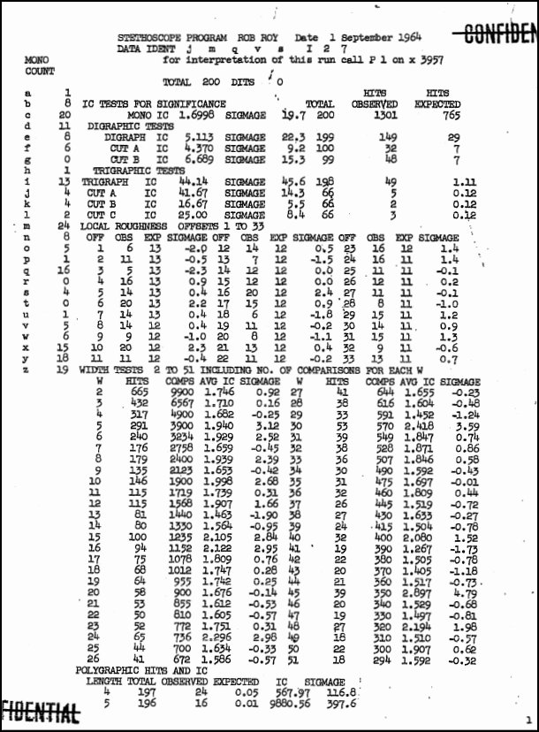
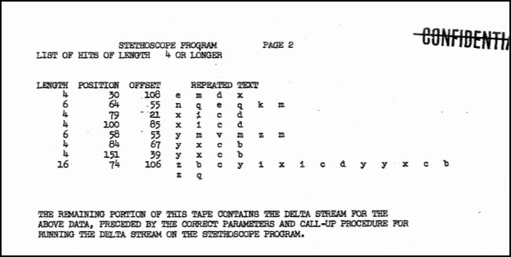

STETHOSCOPE is a cryptanalytic diagnostic tool originally developed at the NSA that applies a battery of statistical tests — monographic, digraphic, trigraphic, and polygraphic index of coincidence, local roughness, width tests, and repeat analysis — to an unknown ciphertext to reveal its underlying structure. Like a doctor’s stethoscope listening for signs of life, it listens for statistical patterns that betray the type of cipher used, guiding the cryptanalyst toward the most promising line of attack.
STETHOSCOPE was a spectacularly successful software program written for the ABNER computer. Developed in the late 1940s and early 1950s, ABNER was one of the NSA’s earliest electronic computers built specifically for cryptanalytic work [1].
In June 1953, Samuel L. Snyder and Frank Lewis, two top NSA cryptanalysts, discussed the idea of a computer program that would perform the tedious initial tests needed to analyze an unknown cipher system. Brainstorming with other NSA cryptanalysts (Tom Leahy, Bill Lutwiniak, John Riise, Wilur Peterson, and Jerry Kimble), a list of cryptanalytic operations was created and implemented, becoming the “Stethoscope” program.
First demonstrated on ABNER in October 1953, it became the most successful program run by cryptanalysts. Stethoscope very efficiently applied all major statistical attacks against cipher text in unknown systems.
The value of Stethoscope can be inferred from the following quote from Brigadier John H. Tiltman’s 1966 NSA article “Some Reminiscences” [2]:
To return to my quotation. “I have always been rather a lone hand, preferring whenever possible to do my own preliminary analysis, registration and indexing. I prefer not to embark on machine runs any more complicated than the simplest sorting and listing, unless there is some very good reasons to believe that they will be profitable.” By way of comment on that sentence, I ought to have said that a special exception should be made in the case of runs of the type of the Rob Roy Stethoscope, which, of course, saves a lot of time in those cases where repetitious and non-random features within a message may provide an immediate clue [2].
The first opportunity to see an actual Stethoscope listing occurred when NSA declassified Lambros D. Callimahos’s publication “Cryptanalytic Diagnosis with the Aid of a Computer - A Collection of 147 Stethoscope Listings” in August 2025 [3]. Here is what a typical Stethoscope listing looked like:


Paste the ciphertext into the Ciphertext box. Spaces, punctuation, and dashes (dits, used as null placeholders) are silently ignored; only letters matching the selected character set are extracted.
Set the character set to match the cipher’s symbol set:
[A-Za-z] — standard 26-letter alphabet (the
default)[0-9] — digit-only ciphertext[A-Za-z0-9] — alphanumericAdd a description (optional) to label the run in the output report.
Check “Display ciphertext in output” if you want the cleaned ciphertext printed in groups of five at the top of the report — useful for double-checking that the right text was submitted.
Set Max repeats to cap the List of Hits section. 50 is a reasonable default; use 0 to show all repeated sequences.
Click Run. The full battery of tests executes immediately in the browser; no data is sent to any server.
Optionally check “Analyze delta stream” and click Run again to see a second full analysis pass on the difference stream (see the Delta Stream section below).
Click Print to open the browser print dialog and save the report as a PDF.
STETHOSCOPE requires at least 4 cipher characters. Meaningful statistics generally require at least a few hundred characters; the digraphic and trigraphic tests become reliable above roughly 400–500 characters.
STETHOSCOPE reports all IC values in normalized form, where a perfectly random distribution produces IC = 1.0 regardless of alphabet size. This differs from the classical Friedman IC (where random text over a 26-letter alphabet gives IC ≈ 0.0385). To convert: multiply the classical IC by the alphabet size c.
Under this convention: - Random text: IC = 1.0 - English monoalphabetic substitution (26 letters): IC ≈ 1.73 - Well-mixed polyalphabetic ciphertext: IC between 1.0 and 1.73, falling toward 1.0 as the period or number of alphabets increases
Each section below describes what the test measures and what to watch for at a glance. Follow the link for full mathematical background, baseline tables, and extended examples drawn from real cipher systems.
The simplest measurement: how often each symbol appears. The monographic IC summarizes the entire distribution as a single number — the probability that two randomly drawn ciphertext symbols are identical, normalized so that random text scores 1.0.
At a glance: IC near 1.73 (for a 26-letter alphabet) → monoalphabetic-like distribution. IC near 1.0 → flat, polyalphabetic-like distribution. Values in between reflect intermediate mixing. An elevated IC is the first indicator that the cipher operates with a small effective alphabet or a short period.
The digraphic IC measures coincidences between pairs of adjacent ciphertext symbols. Two non-overlapping cuts are also computed:
At a glance: elevation of both CUT A and CUT B above the random baseline signals a period-2 digraphic cipher. The relative elevation of CUT A versus CUT B is the key diagnostic:
The trigraphic IC extends the coincidence test to non-overlapping triples. Three cuts are computed, starting at positions 1, 2, and 3 respectively.
At a glance: strong elevation of all three cuts, with CUT A highest, signals a period-3 trigraphic cipher. The ordering CUT A > CUT B > CUT C reveals that the first coordinate position of each encipherment unit is the most constrained — typical of systems where the first output digit or letter is drawn from a smaller or more skewed distribution than the second and third.
Local roughness measures the autocorrelation of the ciphertext at
lags 1 through 33: for each lag k, it counts the number of
positions where ct[i] == ct[i+k] and compares this to the
expected count under the null hypothesis of randomness.
At a glance: three patterns are diagnostically important:
Width tests lay the ciphertext into a rectangle of width W (for W = 2 to 51) and compute the average IC across all columns. At the true period, letters enciphered by the same sub-alphabet fall into the same column, raising the average column IC.
At a glance: look for the pattern of elevated widths:
For polygon lengths 3, 4, 5, … the tool counts how many non-overlapping polygrams of that length appear more than once, and compares this to the number expected by chance. The result is expressed as an IC and a sigmage (standard deviations above the mean).
At a glance:
The List of Hits enumerates every repeated sequence of length ≥ 4, recording position, offset between occurrences, and the repeated text itself.
At a glance:
An isomorph is a pair of ciphertext substrings that exhibit the same letter- substitution pattern: wherever the first substring has letter X at some position, the second substring has a fixed letter Y at the same relative position, consistently throughout. Isomorphs are reported when their expected frequency under randomness falls below 0.5.
At a glance:
The delta stream transforms the ciphertext by subtracting each symbol from the symbol d positions ahead, modulo the alphabet size:
delta[i] = alphabet[ (val(ct[i+d]) − val(ct[i])) mod c ]STETHOSCOPE then runs the complete battery a second time on this transformed sequence. For running-key and autokey Vigenère variants, the delta stream “differentiates” the key, making periodic structure visible even when it is suppressed in the original ciphertext.
At a glance: start with offset d = 1. If you have a period hypothesis, try d equal to the suspected period — this can dramatically sharpen the periodicity signal in the second-pass report.
Reading a STETHOSCOPE listing is not a matter of checking one number; it is a sequence of narrowing questions. This section gives the recommended order of attack and explains which combinations of results point to which cipher families.
Step 1 — What is the ciphertext alphabet?
Before touching any statistic, note whether the ciphertext consists of letters, digits, or a mix. An all-digit ciphertext immediately rules out every letter- output cipher family (Playfair, four-square, Vigenère, etc.) and points toward a coordinate-based or matrix system.
Step 2 — Is the distribution flat or rough? (Mono IC)
Step 3 — What is the dominant period? (Width Tests, then Local Roughness)
Width tests give the cleaner answer on short messages. Look for the smallest width d where the average column IC is consistently elevated, and where multiples of d also show secondary peaks. Local roughness confirms the period and adds information about alphabet structure (disjoint vs. overlapping).
Step 4 — Are the alphabets disjoint or overlapping? (Local Roughness)
Step 5 — Is the cipher deterministic? (Polygraphic Hits)
Catastrophic polygraphic sigmage (tens or hundreds of standard deviations above expected) means the same plaintext maps to the same ciphertext every time. This is present in Playfair, four-square, and decimal matrix systems. When this signal is present, it dominates: move directly to the List of Hits for reconstruction leverage.
Step 6 — What does CUT A vs. CUT B tell us? (Digraphic / Trigraphic Tests)
For a confirmed period-2 system: - CUT A >> CUT B → Playfair family (in-phase digraph pairs more constrained). - CUT A ≈ CUT B, local roughness shows hard zeros at odd lags → biliteral family. - CUT A > CUT B but CUT B substantially elevated → four-square family.
For a confirmed period-3 system: - Trigraphic CUT A >> CUT B > CUT C → the three coordinate positions have decreasing entropy; characteristic of a decimal matrix or trifid-family system.
Step 7 — Are the isomorphs genuine or coincidental?
Apply the phase test: is the isomorph in-phase (both strings starting at the first symbol of an encipherment unit)? Is the offset a multiple of the period? If either test fails, the isomorph is structurally spurious. If polygraphic evidence is catastrophic, skip the isomorph analysis entirely.
Both tests address the same underlying question — what is the period? — but from different angles and with different statistical power.
Width tests aggregate evidence across all column pairs at a given width, making them more reliable for short messages. The pattern of elevated vs. depressed widths is usually unambiguous even at 300 characters.
Local roughness operates at the individual-lag level and is therefore noisier. Its unique contribution is qualitative: hard zeros cannot be produced by an overlapping-alphabet cipher regardless of message length, so a single hard zero at an odd lag is definitive proof of a disjoint alphabet even when the width-test signal is ambiguous.
Use both together: width tests to establish the period, local roughness to characterize the alphabet structure.
An isomorph is meaningful only under specific conditions:
The cipher is not deterministic at the polygraphic level (i.e., polygraphic sigmage is not catastrophic). When exact repetitions dominate, coincidental isomorphs proliferate and provide no independent evidence.
The two strings are in-phase: both start at the first symbol of an encipherment unit. An odd-offset isomorph in a period-2 cipher is definitionally impossible as a plaintext repetition, because the two strings would compare a first-coordinate symbol against a second-coordinate symbol drawn from a different (possibly disjoint) alphabet.
The offset between the two strings is a multiple of the period.
When all three conditions hold, a significant isomorph (expected < 0.5) is worth pursuing. When any condition fails, file it as a coincidence and move on.
The table below summarizes the STETHOSCOPE signature of each cipher family covered by the worked analyses. Values are approximate and assume messages of 300 characters or more.
| System | Period | Alphabet | Mono IC | CUT A vs. CUT B (digraphic) | Local Roughness | Polygraphic | Isomorphs |
|---|---|---|---|---|---|---|---|
| Monoalphabetic substitution | 1 | 26 letters, overlapping | ~1.73 | — | Flat, elevated overall | Very high | Reliable |
| Playfair | 2 | 26 letters, overlapping | ~1.4 | CUT A >> CUT B | Flat (no hard zeros) | High–catastrophic | Phase-dependent |
| Four-square | 2 | 26 letters, overlapping | ~1.4 | CUT A > CUT B (CUT B more elevated than Playfair) | Flat (no hard zeros) | Catastrophic | Ignore |
| Biliteral with variants | 2 | 26 letters, disjoint | ~1.4 | CUT A ≈ CUT B | Hard zeros at all odd lags | Low | In-phase only |
| Decimal matrix (§69e) | 3 | 10 digits, constrained | ~1.17 | CUT B ≥ CUT A | Depressed at non-multiples of 3 (no hard zeros) | Catastrophic | Ignore |
Detailed evidence for each row is in the corresponding worked analysis.
Each analysis presents the raw STETHOSCOPE listing followed by a section-by- section commentary, diagnostic reasoning, and — where the solution is known — confirmation against the actual plaintext and key.
CUT A / CUT B / CUT C Non-overlapping sub-sequences of a ciphertext formed by taking every nth symbol starting at positions 1, 2, and 3 respectively (for trigraphic cuts). Used to isolate individual coordinate streams in multi-coordinate cipher systems.
Deterministic cipher A cipher in which the same plaintext always produces the same ciphertext (given the same key and position). Playfair, four-square, and matrix substitution ciphers are deterministic; running-key and autokey Vigenère variants are not.
Disjoint alphabets Two ciphertext streams are said to use disjoint alphabets when the set of symbols that can appear in one stream has no overlap with the set in the other. In a biliteral cipher, the row-coordinate and column-coordinate streams use entirely separate letters. Disjoint alphabets produce hard zeros in the local roughness at cross-stream lags.
IC (Index of Coincidence) The probability that two randomly chosen ciphertext symbols are identical, normalized (in STETHOSCOPE) so that a perfectly flat distribution scores 1.0. Higher values indicate a more uneven (monoalphabetic-like) distribution.
Isomorph A pair of ciphertext substrings that share the same letter-substitution pattern: wherever one string has symbol X, the other has a fixed symbol Y at the same relative position. Significant when the expected frequency under randomness falls below 0.5.
Local Roughness The autocorrelation of the
ciphertext at lags 1 through 33: for each lag k, the count of
positions where ct[i] == ct[i+k], compared to the
expectation under randomness.
Overlapping alphabets Two ciphertext streams share the same pool of possible symbols (e.g., both draw from the full 25-letter Playfair alphabet). Produces a flat local roughness profile with no hard zeros.
Period The length of the repeating encipherment unit. A period-2 cipher enciphers two plaintext symbols at a time; a period-3 cipher enciphers three at a time.
Phase The alignment of a substring with respect to the encipherment unit boundaries. An in-phase substring starts at the first symbol of a unit (position 1, 3, 5, … for a period-2 cipher). An out-of-phase substring starts mid-unit.
Polygraphic IC The IC computed over polygrams (groups of n consecutive symbols) for increasing values of n, measuring how rapidly coincidences fall off with polygon length.
Sigmage The number of standard deviations by which an observed statistic departs from its expected value under the null hypothesis of random text. A sigmage of 3 or above is conventionally considered significant.
Trigraphic / Digraphic Referring to cipher systems whose fundamental encipherment unit is, respectively, three symbols (trigraphic) or two symbols (digraphic).
Expected IC values under STETHOSCOPE’s normalized convention (random = 1.0):
| Alphabet size | Random IC | English monoalphabetic IC |
|---|---|---|
| 10 (digits) | 1.0 | N/A (plaintext is language-dependent) |
| 26 (letters) | 1.0 | ~1.73 |
| 36 (alphanumeric) | 1.0 | ~1.4 (estimate) |
For digraphic tests, the random baseline for CUT A and CUT B is 1.0; values above ~1.3 at message lengths of 300 are conventionally significant (sigmage ≥ 3).
For local roughness, the expected count at each lag k is approximately N / c, where N is the message length and c is the alphabet size. A sigmage of ±2.5 or beyond at a specific lag is worth noting; a hard zero (observed = 0) at any lag is structurally significant regardless of sigmage.
| Version | Date | Notes |
|---|---|---|
| 0.20 | July 2026 | First public release with full digraphic/trigraphic/polygraphic suite |
| 0.21 | July 2026 | Extended alphabet support; lowercase mono count display |
[1] Samuel S. Snyder, National Security Agency, “ABNER: The ASA Computer, Part II: Fabrication, Operation, and Impact,” Defense Technical Information Center, 2021. Available: https://media.defense.gov/2021/Jul/01/2002754529/-1/-1/0/6586518-ABNER-THE-ASA-COMPUTER-PART-II.PDF
[2] John H. Tiltman, National Security Agency, “Some Reminiscences”, 1966. Available: https://www.nsa.gov/portals/75/documents/news-features/declassified-documents/tech-journals/some-reminiscences.pdf
[3] National Security Agency (NSA) Lambros D. Callimahos: Cryptanalytic Diagnosis with the Aid of a Computer (A Collection of 147 Stethoscope Listings), 1965. Available: https://www.governmentattic.org/59docs/NSAlDCCDAC1965.pdf